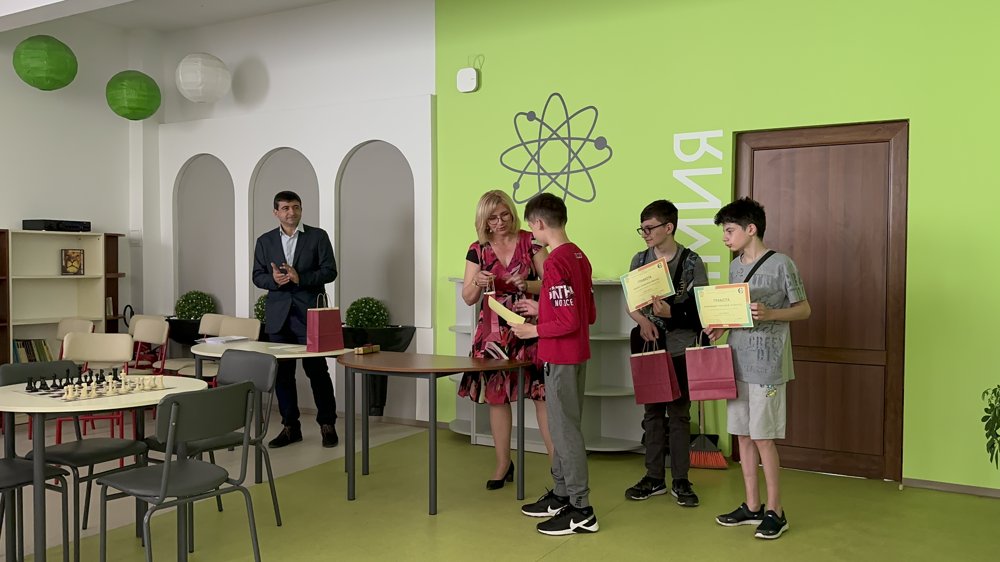

Награждаване на VII клас
На 1 юни 2023 г. в STEM центъра на ПМГ „Васил Друмев“ бяха връчени награди на отличилите се на първите три места ученици и техните учители, на провелия се в училището пробен изпит по математика за ученици от 7 клас. Събитието бе тържествено открито от директорът на гимназията, г-н Ангел Гушев. Наградите бяха връчени от председателя на СМБ – секция В. Търново, д-р Паунка Йорданова.
Първото място беше поделено от двама възпитаници на ОУ „Патриарх Евтимий“ - Александър Николаев Стефанов 100, точки и Ивайло Николаев Иванов 100 точки, с учител д-р Катина Тончева. На второ място с 99,5 точки се класира Антони Калинов Нейчев, ученик от ОУ „Бачо Киро“, с учител г-жа Марина Кокаланова. Третото място с 97 точки зае отново ученик от ОУ „Бачо Киро“ - Кристиан Костов Костов, с учител г-жа Илка Гайдарова.
От името на организаторите на изпита – Съюз на математиците в България - секция В. Търново и Природо-математическа гимназия „Васил Друмев“ пожелаваме още много успехи на отличилите се участници и на техните учители! Наградите бяха осигурени от Съюза на математиците в България – секция В. Търново.